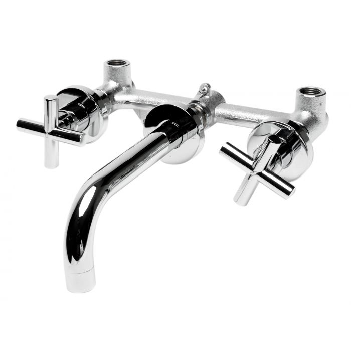

siiky
2021/07/23
2022/07/14
en
Recently I asked a bunch of people which one out of two types of faucets they prefer. The answers were pretty surprising (to me), as everyone chose the same type.
In this post I'll prove them wrong.
The state of a faucet determines 2 things: output pressure and temperature. In real life, many things affect water temperature, including external factors: water pressure (especially for hot water), if the pipes are exposed to the sun, rain, etc. Also in real life, it's not uncommon for the maximum hot water pressure to be lower than that of cold water. However, to KISS, we won't take these details into account. In the case of pressure, we'll just assume it's the same for both hot and cold water.
So, in our simplified model, the state of a faucet alone will determine the water state: both water temperature and output pressure.
The plan is to prove that the faucet types are functionally equivalent to each other, and that each type is fully functional.
We'll call two faucet types functionally equivalent iff they can both represent the same set of water states, i.e., if the codomain of the functions FaucetState → WaterState that represent each type is the same. And we'll call a faucet type fully functional iff it can represent all water states, i.e., there's a surjective function FaucetState → WaterState.
After proving that both types are equivalent in function, we'll follow by proving that it's not enough to be equivalent, and that in some respects one of them is better than the other.
Instead of dealing with actual values and their correct units, we'll simplify our model further and use percentages instead.
Water pressure will range from 0% (off, no water running), to 100% (water running to the faucet's full capacity). Likewise, temperature will range from 0% (the coldest water you can get out of the faucet), to 100% (the hottest water you can get out of the faucet).
The water pressure and temperature considered are the output pressure and temperature, that is, what you'd feel right out of the faucet.
The types so far:
Let's start by introducing both contenders:
And now let's move on to the mathematical models.
This faucet type has two 1D handles, or knobs: one for cold water, and one for hot water.
In this type of faucet, the water pressure is simply the sum of hot water pressure and cold water pressure. There's a catch, however: the pressure of hot and cold water being independent, the maximum hot and cold water pressure must be half of the maximum faucet water pressure.
And the water temperature is simply the ratio of hot water over the total amount of water: hot water pressure over faucet pressure.
This is what we have algebraically:
fA :: FaucetState → WaterState
fA (h, c) ↦ ((h + c) / 2, h / (h + c))
We want to prove that fA is surjective, that is: ∀ (p, t) ∈ WaterState: ∃ (h, c) ∈ FaucetState: fA(h, c) = (p, t)
So, let's fix some (p, t) ∈ WaterState; let's find our (h, c) ∈ FaucetState:
fA(h, c) = (p, t)
≣ { exercise for the reader }
h = 2pt ∧ c = 2(p-pt)
Try fA(2pt, 2(p - pt)) if you don't believe me. p-pt makes sense because p and t are percentages:
Another way to write c is 2p(1-t). Less obvious how to get to it, but more obvious what it means: the pressure of non-hot water, since t is the temperature (with greater meaning hotter).
This faucet type has only one 2D handle: one dimension controls the water pressure, and the other the hot/cold water mixture. In this type of faucet, both the water pressure and temperature are the faucet's pressure and temperature, so its mathematical model is the simplest possible.
Algebraically:
fB :: FaucetState → WaterState
fB(p, h) = (p, h)
fB clearly is surjective, because it is the identity function.
Since both faucet types are fully functional they're also functionally equivalent.
Did you notice something with the mathematical models?
I'll give you a hint: it's obvious -- I've even mentioned it already.
Not there yet? Here's another: type B.
Right?! It is the epitome of simplicity!
Did you notice something else?
Here's a hint: it's not obvious.
Still not obvious? Here: type A.
Right?! Not a damn clue! But squint harder...
Here goes by analogy: ever tried to move a (computer) cursor on a single axis (vertical, horizontal, doesn't matter) with a (computer) mouse? I'll bet you have! I'll also bet you've very rarely (and barely) did so satisfactorily, even if trying very hard! This is easily explained, because while we aim to affect one dimension only, the controls we have available for use affect more than that one dimension, and one may simultaneously (and unintentionally) affect more than that one dimension.
How does this translate to the faucets discussion? Faucets B require you to set one or two parameters with a single 2D control, that is, set one or two parameters simultaneously. While with faucets A you're only required to set a single parameter at a time, through a single 1D control for each parameter.
Imagine you're enjoying the current temperature but not so much the current current. Or maybe you like the current but wish it was a tad hotter. What do you do if you have a faucet A? Just change the thing right away! What do you do if you have a faucet B? Roll for luck!
For us, physical beings using faucets through mechanical interaction, it follows that faucets A are superior.
I can think of more reasons to justify the superiority of faucets A, but I'll leave them for another post, maybe.